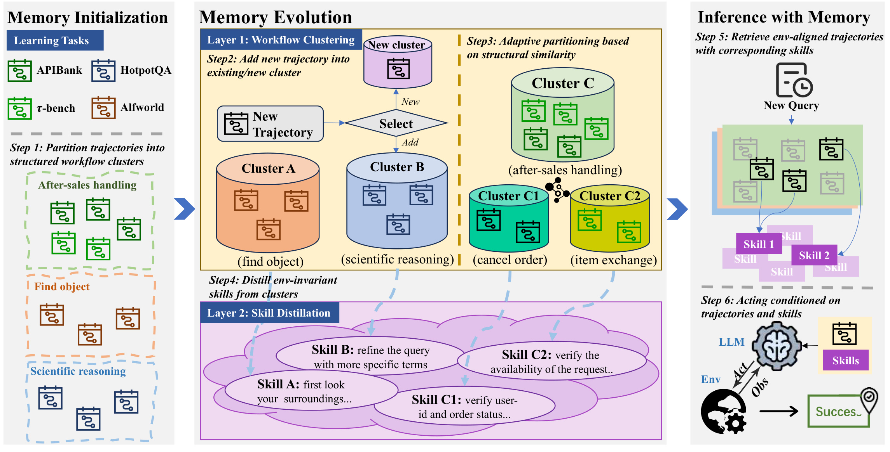
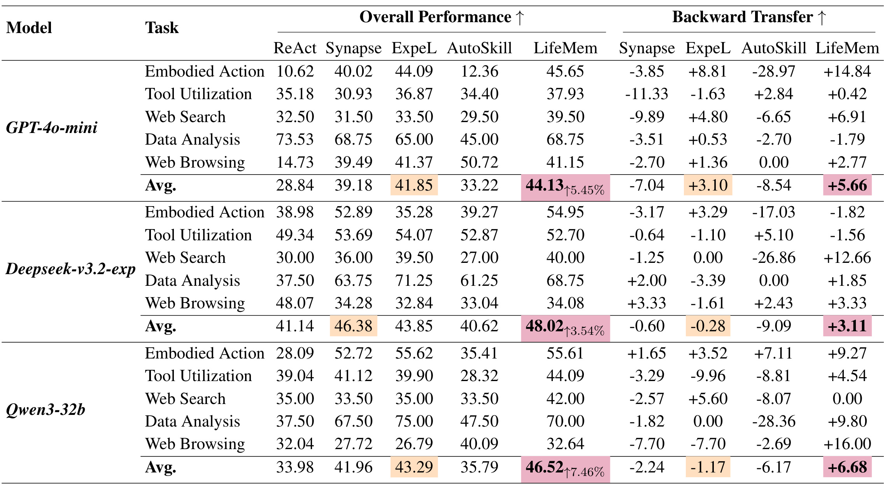
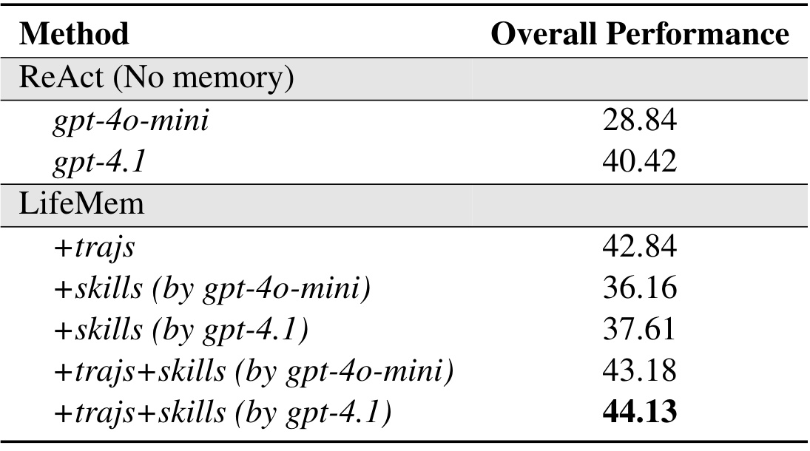
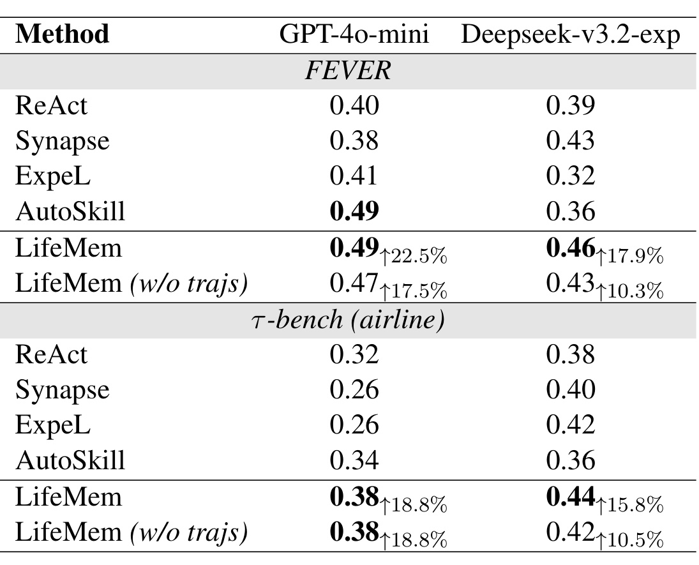
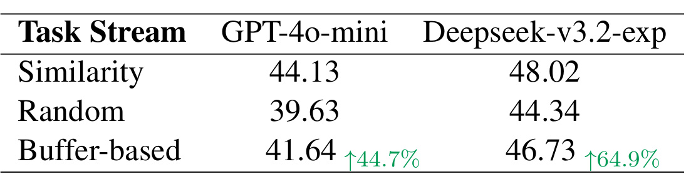
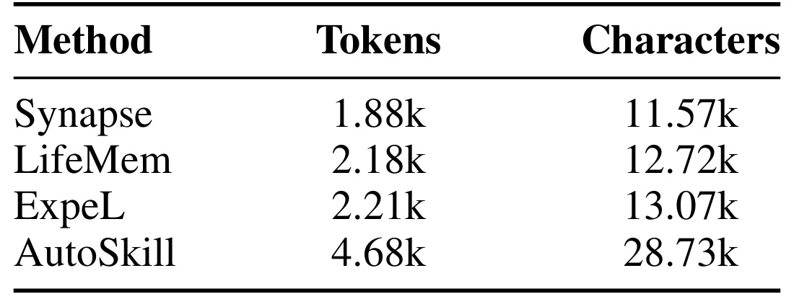

LifeMem：让智能体按工作流积累可迁移经验
LifeMem: Enabling Lifelong Experience Reuse for LLM Agents 研究跨环境智能体的外部经验记忆，先聚类工作流再提炼技能，以同环境轨迹与关联技能共同指导执行。
作者为 Yuli Qiu、Yutong Li、Wei Su、Zeming Liu、Wanxiang Che、Heyan Huang、Haifeng Wang、Yuhang Guo。第一作者来自北京理工大学，合作机构包括北京航空航天大学、哈尔滨工业大学与百度。作者拼写以 PDF 首页为准；arXiv 页面将最后一位列为 Yuang Guo，存在元数据差异。
论文于 2026 年 9 月 11 日发布 arXiv v1；本笔记核验日期为 2026 年 9 月 15 日。论文入口：arXiv:2609.12655。代码入口：BITHLP/LifeMem，官方仓库可访问，页面展示 memory、trainset 及环境目录，本轮未运行训练或复现实验。
现有基于记忆的智能体难以跨环境迁移可复用经验，而且随着经验积累，会遗忘过去已经掌握的任务。
1. 背景和问题
LifeMem 研究的是一个智能体不断接触不同工具、网页、数据库或具身环境时，怎样让新增经验帮助后续任务，同时不干扰早期能力。这里的“学习”主要发生在外部记忆中：保存历史交互、重新组织轨迹、提炼文本技能，再把相关内容放进下一次执行的上下文。不能把它直接理解成持续更新语言模型权重，也不能把它等同于把所有对话塞进一个更大的向量数据库。
论文面对的经验载体是一条条交互轨迹。每条轨迹包含观察和动作，动作受到环境接口约束。购物网站中可能要点击链接、查看商品、选择属性；数据库任务中需要加载表、执行查询并解释结果；事实核验则需要搜索条目、定位证据、给出支持或反驳的标签。这些任务有时在语言主题上很接近，实际动作格式却完全不同。反过来，主题不同的任务可能共享执行结构，例如先确认对象状态，再验证允许操作的条件，最后执行不可逆步骤。普通语义检索对主题相似度敏感，但不天然识别“先后依赖是否一致”“当前环境是否允许这种动作”。这正是论文把工作流置于记忆组织核心的动机。
第一类对照方法只存轨迹并检索相似示例，代表是 Synapse。它的优点是示例具体，智能体可以直接观察接口名称、参数格式和调用顺序；缺点也来自同一层具体性。来自错误环境的示例越详细，越可能把当前执行引向错误的动作空间。附录中的 FEVER 失败案例就展示了这种问题：模型检索到 APIBank 的工具调用示例，在事实核验环境生成带不兼容形式的动作，环境连续返回无效动作。失败不是事实问题没有知识可查，而是记忆里的操作形式污染了当前动作。因此评价检索质量时，只看输入与示例的文本相关性不够，还要问示例能否在当前接口中合法执行。
第二类方法把轨迹总结成经验或技能，代表是 ExpeL 和 AutoSkill。它们试图越过底层动作差异，给出更抽象的指导。但如果直接在混杂的轨迹池上做全局提炼，不同环境的规则可能被合并成宽泛甚至矛盾的文本。一个看似通用的“先调用搜索工具”在某些环境必须写成特定函数，另一些环境只能执行页面操作；过度具体的摘要失去迁移性，过度抽象的摘要又只剩没有行动价值的常识。随着经验增长，这种冲突还会改变早期技能的代表性，或者让早期示例越来越难以被检索出来。论文将这类外部记忆引起的能力退化也放在遗忘框架下考察，但其因果机制与参数训练中的灾难性遗忘不同。
LifeMem 的处理顺序是先整理轨迹，再提炼技能。它把行为依赖相近的轨迹聚成簇，让技能来自局部一致的经验集合；在执行时，又保留同环境轨迹用于约束动作格式。这形成一个清楚的分工：轨迹负责“在这里具体怎么做”，技能负责“这一类事情通常应遵守什么执行原则”。跨环境共享主要发生在技能层，而不是把不同环境的原始动作直接混用。因而论文并未主张完全环境无关的执行器，也没有取消环境标签；恰恰相反，推理时主动使用环境信息限制低层示例来源，是其降低干扰的重要部分。
这一设定把长期记忆问题拆成两个相互牵制的目标。若每个任务都独立存档，几乎没有错误合并，但新任务难以获得抽象经验；若把所有经历归成少数通用技能，复用范围很广，却可能丢掉决定成功的前提条件。论文加入动态分裂，让记忆粒度随经验增加而变化：同一种简单流程反复出现时继续积累，不必为了数量而切碎；一个宽泛簇逐渐出现多种操作模式时，再拆成更细的技能。这个设计也意味着系统表现会依赖经验的到达顺序，因为早期簇描述会影响后续轨迹的归属，分裂时看到的样本组合也会不同。
阅读实验时还要区分“覆盖十个环境”与“十个环境都参加测试”。作者总计使用十二千余条训练实例和一千余条测试实例，但 LifelongAgentBench 在主设置中只提供训练经验，没有独立测试列。论文用不同任务的成功率或准确率构成总体平均，并不是给一个统一业务流量计算加权收益。因此，整体分数的提升支持其跨基准研究价值，却不能直接推导成任意生产智能体的成功率收益。尤其当模型本来擅长某个环境时，外部经验也可能造成负干扰；本文后面会把这些结果和平均收益一起记录。
从研究问题看，LifeMem 最值得关注的是经验的组织结构，而不是新的骨干网络。它要求系统显式维护轨迹与技能之间的来源关系，使检索到的具体示例能够定位其所属工作流，再激活相应规则。这种可追踪关系给错误分析提供了入口：执行失败可以分别检查示例是否同环境、簇是否混杂、技能是否过宽、具体任务是否超出技能适用范围。相比单纯增加提示词或检索条数，这个问题定义更适合研究长期运行后为什么性能改变，但论文的现有证据仍以受控基准为主，距离无界经验流上的长期稳定性还有差距。
这一问题还有一个容易忽略的评估维度：记忆可以没有删除任何旧记录，却让旧任务成绩下降。只要检索排序改变、簇描述被新经验覆盖，或者新技能与旧动作习惯冲突，就会出现行为层面的遗忘。反之，保留全部轨迹也不能保证旧知识可用。因此本文将成绩随任务流变化作为主证据，而不是把数据库中还存在旧文件当成持续学习已经成功的证明。这也解释了为什么终态平均与向后迁移必须同时报告。
2. 方法
2.1 记忆初始化：把轨迹组织成工作流簇
原文先定义智能体与环境的交互。环境包含状态、动作、观察与转移动力学；当前目标、记忆和观察共同决定动作。这里的环境边界有实际约束意义：两条轨迹即使任务描述接近，只要工具名称、合法参数或状态转移不同，就不应被当成可直接互换的执行示例。记忆首先是策略的条件输入，后续模块通过改变这个输入影响行为。动作生成写为：
符号解释：$P_\theta$ 是固定参数的语言模型策略，$g$ 是自然语言目标，$M$ 是可更新记忆，$o_t$ 是当前观察，$a_t$ 是产生的动作。一次任务得到观察—动作轨迹 $\xi_i$，并将它作为后续学习的来源。轨迹保持交互顺序，因此可区分某个观察究竟发生在动作之前还是之后，这对辨认因果依赖很重要。最基础的经验积累形式为：
符号解释：下标 $i$ 表示任务序号，不是梯度更新次数。这个集合表达式描述经验进入记忆，而 LifeMem 真正要解决的是集合内部怎样分组、提炼和检索。初始化时先取少量轨迹，调用语言模型依据共享工作流划分成簇，并为每个簇生成简短描述。实验初始轨迹数为五。簇描述是后续增量归类的语义入口，输入是具体的交互序列，输出是结构化簇及其描述，而不是训练一个分类网络。

Figure 2 从左到右串起六个步骤。左侧将不同任务放入寻找对象、科学推理、售后处理等工作流，强调初始簇不要求与原始数据集一一对应。中间上层是轨迹更新：新的经验先选择已有簇或新建簇，原先较宽泛的售后簇又可以分成取消订单与商品换货。这里分裂后的簇有不同前提约束，因此下方提炼的技能也分别强调身份及订单状态检查、请求可用性检查。图中箭头表达来源关系，不能将不同颜色的技能当作彼此独立训练的模型。中间下层则把轨迹集合转为较短的文本规则，降低低层接口差异带来的污染。
右侧的推理阶段同时激活两类内容：同环境轨迹给出实际可执行动作的示范，簇所关联的技能提供更宽范围的策略指导。它不是先在全库选一个抽象技能后自由生成接口，也不是把所有技能一并注入上下文。被检索到的轨迹承担连接查询和簇的桥梁，因此检索错误仍可能影响技能选择。框架的优势在于把低层格式与高层原则分开控制，同时保留两者的来源关系；它的限制则是环境识别、候选检索和簇摘要都需要正确工作。图中的成功图标表示设计目标，并不是所有任务都能成功的实验结论。结合后面的消融结果，具体轨迹是主要性能基础，技能在此基础上提供额外收益，这比把框架理解为“只靠抽象技能就能跨环境执行”更符合证据。
图中从簇指向技能的虚线还表明，分裂会改变技能的来源集合，不能只改簇名称而继续复用未经检查的旧摘要；否则底层经验已细分，高层规则仍保持宽泛，结构调整就无法传到执行阶段。
2.2 记忆演化：增量归类与自适应分裂
新轨迹到达后，系统先检索相关历史轨迹，收集它们所属的候选簇，再由语言模型判断是加入现有簇还是新建簇。若加入，更新簇描述，使已有工作流吸收新经验。这里向量检索承担候选缩小作用，最终归类依靠模型对执行逻辑的判断，所以“按工作流组织”不意味着完全抛弃语义向量。实施中使用 all-MiniLM-L6-v2 表征、FAISS 检索、SQLite 保存簇，候选轨迹数量设为四。候选召回若漏掉真正相关的工作流，模型看到的簇集合就不完整，可能错误新建或误归类；论文没有把这一步变成具有完备性保证的搜索。
为避免大簇越来越混杂，论文用单位化轨迹向量的平均方向长度判断集中程度。归一化让每条经验以相同模长参与平均，避免单条向量长度支配结果；判断的是簇内方向是否仍然一致，而不是经验是否足够多。这个统计量只用于触发进一步整理，真正如何划分子簇仍交由语言模型完成，因此需要同时理解几何判据和语言归类两个层次：
符号解释：$x_i$ 是簇内第 $i$ 条轨迹的归一化嵌入，$n$ 为簇大小，$R$ 取值在零到一之间。方向相近时均值长度大，方向分散时相互抵消，长度变小。只有下列两个条件同时成立才触发分裂：
符号解释：$L$ 是容量门槛，$\tau_{\mathrm{mrl}}$ 是集中度阈值；正文实验设 $L=50$、$\tau_{\mathrm{mrl}}=0.95$。因而“超过五十条就一定分裂”是不准确的：一个高度重复的大簇仍可以保留。也不能将 $R$ 直接视为严格的工作流相似度；它测量的是嵌入方向一致性，能否反映行为结构取决于表征质量。簇体积门槛与方向多样性门槛共同控制粒度，意在避免小簇过度切分，也避免大簇长期混杂。
附录提示模板还暴露一个复现细节：分裂模板写的是簇超过三十条，并要求重分成三至六个子簇；正文实现则给出五十的容量阈值。模板中的文字条件可能与实际代码触发条件不同，不能擅自认定二者一致。增量归类模板只允许添加或新建，不允许在那个模式直接删除、合并、分裂；真正分裂由单独流程承担。这说明维护记忆不是一次通用模型调用，而是有阶段约束的更新协议。没有核对执行代码前，笔记以正文参数为实验报告口径，同时保留这一冲突。
2.3 技能蒸馏：在局部一致经验中抽取规则
每个工作流簇被映射为高层技能。簇是保留多个实例的经验集合，技能则是从中提取的文本规则，两者不能互相替代：若只留规则，后续很难检查它基于哪些示例产生；若只留轨迹，则难以跨接口复用共同原则。LifeMem 保留成对关联，让推理过程既能访问实例，又能定位来源明确的规则。论文用下面的映射和集合表达这种层级关系：
符号解释：$c_i$ 为轨迹簇，$f$ 是基于提示的语言模型抽象过程，$s_i$ 是该簇技能，$C$ 为簇集合，$H$ 为分层记忆。技能描述共享约束、逻辑依赖和执行原则；附录要求从成功轨迹提取三到五条简洁规则，并避免在规则中复述具体试验。这里的“蒸馏”是文本知识提炼，未定义学生模型的参数优化损失。它的输入范围被簇约束，从而减少全局混杂池中不相关轨迹对规则的干扰。
模型分工也是成本与质量设计的一部分。新轨迹归属用 GPT-5-mini 判断，簇分裂与技能提炼用 GPT-4.1；数据轨迹生成和基线经验提炼同样涉及 GPT-4.1。不能把最终执行骨干写为唯一参与模型。技能质量受生成器能力影响，但消融表明换成 GPT-4o-mini 提炼后仍有收益，因此作者认为记忆结构不只是强模型向弱模型灌输答案。更严格的理解是，现有消融支持组织与抽象有独立作用，尚不能完全分离所有数据构造、聚类判断和生成器因素。
2.4 推理：同环境轨迹与关联技能共同进入上下文
给定当前任务，先从相同环境检索最相关的 $k$ 条轨迹，再找到这些轨迹所属的工作流簇并激活其技能：
符号解释：$C_\xi$ 表示检索轨迹关联的簇，$S_\xi$ 是去重后的关联技能集合。最终动作由激活的双层上下文生成：
符号解释：$M_{\mathrm{act}}$ 是激活的记忆上下文，$\xi_j$ 为第 $j$ 条示例，$S_\xi$ 为对应技能集合，$o$ 为当前观察。具体示例约束操作形式，高层技能传递跨环境共性。构造记忆阶段处理历史轨迹并维护簇；在线执行阶段主要检索、拼接上下文和调用骨干模型，不要求每个动作都重新全量聚类。这种阶段区分决定了更新成本与单次推理成本应分别统计。对于完全新环境，同环境轨迹可能不存在；论文通过未见任务和相近环境迁移实验及去轨迹版本考察这个问题，但没有给出任意未知接口下自动发现环境标签的完整方案。环境对齐因而既是有效机制，也是一项部署前提。
3. 实验结果
3.1 数据构造、评估口径与任务流
Table 1 给出十个环境：AlfWorld 为 2204/134 条训练/测试实例，ScienceWorld 为 2043/139，APIBank 为 3131/262，τ-bench 为 530/115，HotpotQA 为 800/100，Webshop 为 1571/100，LifelongAgentBench 为 280 条训练且无测试，ToolQA-coffee 为 700/80，Miniwob++ 为 221/48，Mind2web 为 1009/252。总计 12489 条训练、1230 条测试。四个缺少训练划分的环境由 GPT-4.1 在 ReAct 框架下采集 2310 条轨迹，其中 1541 条被环境反馈判为成功。这个成功数不能与构造总数混为一谈，更不能把全部生成轨迹说成人工撰写。
五名具有计算机相关背景的标注者评估中间动作是否朝目标合理推进，作者报告超过九成动作合理。这里评价对象是步骤合理性，既不是端到端百分之九十成功，也不是对所有数据的无误证明。附录 ToolQA 又列出 210 条自定义函数轨迹与 259 条 SQL 轨迹，和表中 700 条训练实例不等；这些数字可能对应不同过滤阶段，但原文未在该处明确闭合，复现应核对划分文件。环境标签也有不一致：Table 1 把主流中的 τ-bench 标为 airline，而正文及附录迁移设置把零样本 airline 作为未见环境、以 retail 为已见任务。本文遵循零样本段落描述解释迁移，不将主表标签当作已消除的数据划分疑点。
评估骨干是 GPT-4o-mini、Deepseek-v3.2-exp 和 Qwen3-32b；后两者未启用推理模式，温度为 0.3。ReAct 不使用记忆，Synapse 用轨迹，ExpeL 与 AutoSkill 提炼经验。标准任务流按 AlfWorld、ScienceWorld、APIBank、τ-bench、HotpotQA、Webshop、LifelongAgentBench、ToolQA、Miniwob++、Mind2web 顺序经过各环境，相近类别连续出现。这是有结构的顺序条件，不能把主结果直接称为完全随机在线流结果。具体任务有步数上限，ScienceWorld 只有环境分数达到一百才算成功，HotpotQA 用精确匹配，Mind2web 用完整任务成功，因此跨任务平均是多种测量口径的宏观汇总。
设 $s^i_{1,\ldots,j}$ 表示学习前 $j$ 个任务后在任务 $i$ 的成绩，论文总体性能和向后迁移定义为：
符号解释：$N$ 是参与该指标的任务数，$s^i_{1,\ldots,N}$ 是所有任务学习结束时在任务 $i$ 上的成绩，$s^i_{1,\ldots,i}$ 是刚学完该任务时的成绩。OP 是终态平均，BwT 比较最终成绩与刚学到该任务时的成绩，并除以当时成绩，所以报告的是相对变化。正值表示后续经验总体促进旧任务，负值表示遗忘。附录例子中 Miniwob 从 77.08 降至 75.00，得到约负 2.70%，而不是下降 2.70 个百分点。最后一个任务没有后续经验，因此不参加 BwT。这个相对分母还会放大小基数任务的变化，应结合原始分数读取。
3.2 平均收益与仍然存在的负迁移

Table 2 最稳定的结论是三个骨干的整体平均都以 LifeMem 最优。GPT-4o-mini 的 OP 为 44.13，最强记忆对照 ExpeL 为 41.85，绝对提高 2.28 个分数点，按后者为分母是约 5.45% 相对提升；对无记忆 ReAct 的 28.84 则是大幅提高。Deepseek 的 48.02 对 Synapse 的 46.38，相对提升约 3.54%；Qwen 的 46.52 对 ExpeL 的 43.29，相对提升约 7.46%。这三个百分数都有各自对照，不能当成相对于 ReAct 的统一增益。表中 Avg 按测试数据集汇总，不应简单对五个类别数字再做无权平均。
三个骨干的平均 BwT 分别为正 5.66、正 3.11、正 6.68，支持后续经验在整体上能帮助早期任务。然而，正文“所有指标都优于所有基线”的概括超出了表格：GPT-4o-mini 数据分析成绩为 68.75，低于 ReAct 的 73.53，BwT 仍为负 1.79；网页浏览 41.15 也低于 AutoSkill 的 50.72。Deepseek 工具使用为 52.70，低于 ExpeL 的 54.07，工具使用与具身动作的 BwT 分别为负 1.56 和负 1.82；它的网页浏览仅 34.08，明显低于 ReAct 的 48.07。Qwen 数据分析 70.00 不及 ExpeL 的 75.00，网页浏览 32.64 不及 AutoSkill 的 40.09。这些反例意味着组织经验改善的是整体权衡，没有消除所有记忆干扰。
附录 Table 13 进一步把类别拆开，能发现更局部的问题：GPT-4o-mini 的 τ-bench BwT 为负 5.41，Deepseek 的 APIBank 为负 7.22，Qwen 的 AlfWorld 为负 1.04。即使一个大类平均为正，也可能掩盖其中一个环境退化。Mind2web 的绝对成功率大多只有约三至四，显示现实网页环境仍然很难。这里还存在表间细节差异：GPT-4o-mini 数据分析 ExpeL 的 BwT 在 Table 2 为正 0.53，逐任务 Table 13 的 ToolQA 行为负 1.89；主设置该类仅一个测试集，原文未解释差异。故本文不据此项做精细优劣判断，保留原表待代码核验。
还应区分纵向改善与横向最优：某任务的向后迁移为正，只说明终态优于其较早检查点，并不意味着超过另一种方法的终态分数。反过来，总体成绩领先也可能伴随若干旧环境遗忘。两组列必须结合阅读，不能拿右半表的正号替代左半表的实际能力比较；记忆保护和最终解决任务的能力是相关但不同的目标。
3.3 轨迹与技能贡献能否分开

Table 3 在 GPT-4o-mini 上给出了较清楚的机制拆分。只用环境对齐轨迹达到 42.84，而无记忆为 28.84；只用技能时，以 GPT-4o-mini 提炼得 36.16，以 GPT-4.1 提炼得 37.61。两者结合分别为 43.18 和 44.13。由此可见，轨迹本身贡献了很大一部分提升，抽象技能在轨迹基础上的额外收益分别为 0.34 和 1.29 个分数点。技能单独有效，但明显不及具体示例，符合“抽象规则提供策略、实际轨迹提供操作格式”的功能分工。不能把总增益全归因于技能蒸馏，也不能据此说抽象技能可以替代示例。
生成器能力对结果有影响：更强生成器的技能单独提升约 1.45 点，联合配置提升约 0.95 点。作者用弱生成器仍有效的结果反驳“收益完全来自强模型蒸馏”，这一证据有意义；不过 GPT-4.1 仍参与轨迹构造与部分记忆更新，因此不构成整个流水线完全摆脱强模型的实验。表中 GPT-4.1 无记忆为 40.42，弱执行骨干加记忆达到 44.13，这也只能说明在该套任务与额外经验条件下可以超过其无记忆分数，并非证明弱模型一般能力超过强模型。比较时必须同时记录外部经验和建库成本。
附录 Table 9 在另外两个骨干也得到相同方向：Deepseek 完整 48.02，去技能 47.09，去示例 43.46；Qwen 完整 46.52，去技能 43.88，去示例 39.65。技能的增益随骨干变化，Qwen 去掉技能损失更大，但三者都更依赖示例。这些消融支持双层设计，不过尚缺环境过滤、工作流归类、动态分裂、局部抽象各自完全正交的拆分；因此无法从这张表独立量化每一个子机制的贡献。论文报告点估计，没有在该表给出多随机种子方差或置信区间，小幅差异尤其应谨慎看待，至少还需相同测试任务上的配对失败分析与重复运行才能判断稳定性。
3.4 未见任务与未见环境的迁移

Table 4 把迁移分为两种。FEVER 使用与 HotpotQA 相近的维基百科搜索环境，但目标从问答换成事实核验；airline 则从零售工具任务迁移到航空服务环境。GPT-4o-mini 在 FEVER 从 ReAct 的 0.40 到 LifeMem 的 0.49，是九个百分点、相对 22.5%；Deepseek 从 0.39 到 0.46，是七个百分点、相对约 17.9%。airline 的两者分别从 0.32 到 0.38、从 0.38 到 0.44，均提高六个百分点，对应相对约 18.8% 与 15.8%。表格中的提升百分比明确以 ReAct 为基线。FEVER 的 GPT-4o-mini 与 AutoSkill 同为 0.49，所以这里不是严格领先每个对照。
去轨迹后，GPT-4o-mini 在 FEVER 为 0.47，在 airline 仍为 0.38；Deepseek 为 0.43 和 0.42。这说明纯技能已经具备迁移价值，具体轨迹在部分设置中进一步提升，也可能没有可见边际贡献。附录采用一百条 FEVER 和五十条 airline 测试，样本规模有限，少数任务的成败就会改变数个百分点，不能对零点几的差值作过强解释。更关键的是，FEVER 的改善同时利用了环境对齐检索：原文案例把检索限定到 HotpotQA 来源，避免 APIBank 格式干扰。因此案例支持“环境筛选与技能共同帮助迁移”，不是单独证明抽象规则解决了任意未知动作空间。
3.5 任务到达顺序、检索与聚类粒度

Table 5 显示主结果对数据流组织敏感。GPT-4o-mini 从相似顺序的 44.13 降至完全随机的 39.63，Deepseek 从 48.02 降至 44.34。把随机到来的轨迹先放进按任务划分、大小为五的小缓冲，再以小批量写入，分数回升到 41.64 与 46.73。表中绿色 44.7% 和 64.9% 是相对于随机退化的恢复比例，例如前者为恢复 2.01 点除以总损失 4.50 点，并不是成功率提高四成多。缓冲只能恢复部分退化，仍未达到相似顺序。这个结果说明记忆更新具有历史依赖，局部共同出现有助于形成较稳定的工作流，而不是证明随机流与有序流等价。
附录逐环境结果进一步限制了“缓冲总是更好”的说法：GPT-4o-mini 的 ScienceWorld 从随机 23.74 到缓冲 23.02，HotpotQA 从 41.00 到 40.00；Deepseek 的 τ-bench 从 63.48 到 60.87。缓冲是总体改善策略而非逐环境保证。完全随机下 GPT-4o-mini 的 LifeMem 为 39.63，ExpeL 为 39.37，领先仅 0.26 点，明显弱于标准流中主表的差距。因此对生产经验流最有用的结论是，记忆提交顺序也应纳入系统设计和评估，不能只复现最终静态记忆快照。
检索强化对照也提供了边界。附录 Table 7 中 Synapse 为 39.18，换较强嵌入后为 40.55，加 BGE 重排后反降到 37.29，LifeMem 为 44.13。作者认为普通查询—文档相关性不能完整表达行为可执行性；实验支持这两种具体检索替换没有追上结构化方案，却不能证明所有轨迹专用检索器都无效。超参数实验只在 AlfWorld、GPT-4o-mini 上做：检索二条为 56.72，四条和八条均为 58.21；簇容量十、三十、五十、八十对应 48.51、52.99、58.21、51.49；分裂阈值 0.9、0.95、1.0 对应 54.48、58.21、57.46。过细会碎片化，过粗会混杂，中间粒度较好，但不能把五十推广成所有环境最优。
作者还用三名标注者判断采样簇的主导工作流，一致轨迹占比定义为：
符号解释：$K$ 是被检查的簇数，分子统计与簇主导工作流一致的轨迹，分母为被检查轨迹总数，报告纯度为 91%。Webshop 每簇平均二十九条，τ-bench 约十二条，说明重复程度不同的环境产生不同粒度。纯度是人工一致性证据，不等于因果证明；即便九成轨迹共享宏观工作流，少数错误前提仍可能污染技能，且论文没有把所有误归类对最终失败的贡献分解出来。
3.6 成本、实现状态与可复现边界

Table 10 比较的是跨基准的初始查询平均上下文，包含系统提示、少样本示例、技能和当前任务。LifeMem 为 2.18k tokens，Synapse 为 1.88k，增加约三百；ExpeL 为 2.21k，AutoSkill 为 4.68k。技能局部激活避免把庞大全局经验都送入上下文，是成本可控的直接证据。不过这里没有测量完整多步交互的累计输出、工具调用、重试延迟和端到端时延，因此不能说每个任务总成本只多三百 tokens。字符数也与 tokens 不同，表中同时报告是为了描述上下文长度，不能将两列相加。
作者估计建库约每千条轨迹一美元，并称以当时 GPT-4o-mini 价格在全部测试集上增加的推理成本少于一美元。这是论文在其配置与价格下的估算，不是本笔记核验的当前报价；也没有充分细分 GPT-5-mini 归类、GPT-4.1 分裂、技能提炼及数据构造费用。部署时应分别测量这些阶段，特别是大簇分裂会重新处理多条经验，均摊线性成本不能代替尾部延迟。官方仓库当前可访问且包含记忆与数据目录，意味着已有复现入口；本轮没有跑通环境依赖、检查所有种子与数据映射，因此代码存在与结果可完整复现仍是两个不同状态。
4. 总结
LifeMem 给出的可复用设计是：先用工作流组织轨迹，再在局部一致的经验里提炼技能，执行时以同环境示例约束动作，以关联技能提供跨环境原则。它把记忆从无序文本存储变成可演化的两层结构。主结果在三个骨干上提高终态平均分数，正的平均向后迁移也说明新增经验可以帮助旧任务；消融进一步表明轨迹与技能的分工确有实验支持。对于要长期运行的工具智能体，这比只增加上下文长度更有研究价值，因为它直接触及经验越来越多后如何避免相互干扰的问题。
但结论要保留四项边界。第一，环境对齐是重要先验，未知接口如何自动识别、是否应该允许跨环境检索、环境版本变化后旧示例如何失效，都没有被完整解决。第二，标准流经过相似环境分组，随机化后优势变小，小缓冲也只能恢复部分收益；长期在线流中的突发变化和恶意经验并未充分覆盖。第三，结果以一万多条训练实例规模建立，缺少百万经验规模下的检索、分裂和维护时延证据，费用估算也未完整覆盖多轮执行。第四，部分类别仍退化，网页任务绝对成功率很低，平均正迁移不意味着所有过去任务都受到保护。对记忆系统而言，保留已有能力需要逐环境监测，不能只看总体均值。
另一个不能忽略的问题是可复现口径。正文与附录的分裂阈值文字不同，τ-bench 的主表标签与零样本划分描述存在冲突，ToolQA 训练数量及个别 BwT 数字也未完全闭合。这些差异不自动否定方法，但会影响复现实验选择和精确数值比较。作者署名页面与 PDF 的拼写差异也应在引用时保留来源依据，避免自动聚合时误把同一作者拆成不同人。读者最应该带走的是结构化记忆的机制和有条件的实验证据，而不是将所有表格数字直接当成无歧义规格。
后续验证可以沿三条明确路径推进。先锁定数据与代码版本，检查每个环境的训练/测试标识，复核 retail 到 airline 的隔离及正文五十条分裂触发值，以相同骨干跑通一条完整任务流。再做更细机制消融：固定环境过滤与检索示例，分别去掉动态分裂、改为全局技能提炼、改变簇归类器，观察收益到底来自哪一层，并同时统计旧任务最坏退化而不只看均值。最后将经验随机流、环境接口变更、重复轨迹和错误经验注入到连续评估里，测量簇纯度、技能有效性、每次维护费用和尾部延迟，判断结构演化能否稳定运行。
从笔记的综合判断看，LifeMem 是值得复现的外部记忆组织方案：模块清晰，原始轨迹和抽象规则的联系可追踪，失败可以沿检索、归类、技能、执行逐层定位。不过真正的工程价值需要以目标环境上的受控实验确认，尤其要比较“仅做同环境轨迹检索”这一强对照。若额外技能只贡献很小分数，而分裂和提炼造成较高维护成本，系统可以选择更简单的组织方式；若跨环境迁移和长期保留是核心目标，则工作流簇与技能来源关系提供了有依据的设计起点。
这项研究也提醒评估者保留失败轨迹与记忆版本，使后续退化能够回溯到具体更新，而不仅留下最终平均成绩。